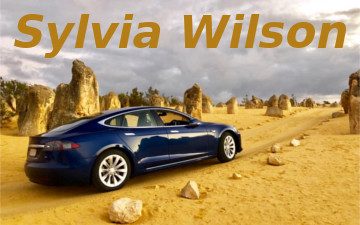
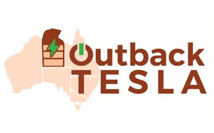
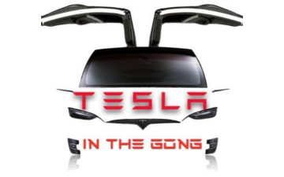
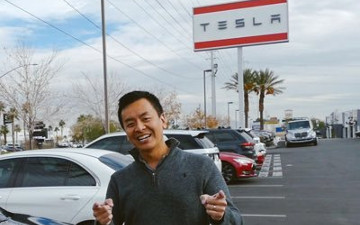
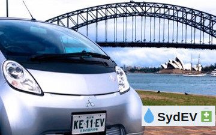
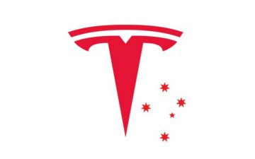
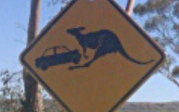

Home
Despite setbacks and weathering no shortage of furphies, some Australian EV owners have gone well out of their way to make it easier for the rest of us by their example and guidance. Show an Aussie EV Champion some love by using their Tesla referral code when you order yours. You'll both receive free Supercharger Kms and your chosen champ will go in the running to win.
More details of the Tesla referral program.

Sylvia Wilson; electric vehicle pioneer
First woman to drive electric car around Australia in a Tesla S75 (2016) called Bluey.

Outback Tesla; often nowhere near a Supercharger
Circumnavigated Australia in an Tesla Model X 100D. A trip of 14,579 kms.

Tesla In The Gong
Tesla 75D Model X aka Superman in Australia with special focus on Illawarra, New South Wales.

Tesla Tom
Aims to inform and entertain you on the basics and intricacies of owning a Tesla Model S, Model X and PowerWall 2 from an Australian perspective.
David Cao
Pharmacist, Tech Enthusiast, Electric Vehicle and Renewable Energy advocate.

SydEV
Ev owner and advocate in Sydney, powered by 100% Fair dinkum Solar and Powerwalls. Aircraft operator and Pilot.

Chris Vanderstock
A technology fan who makes YouTube videos about technology, renewables, EV's, cruising and more.

Tesla Straya
Tesla enthusiast & Powerwall2 owner, on the New South Wales Central Coast. Has a passion for all things technology.

Outback-EV
Electric Vehicles in Alice Springs, not in cooee of a Supercharger. True blue Aussie Outback.

{kind=link}
{kind=link}
{kind=link}
{kind=link}
{kind=link}
{kind=link}
{kind=link}
{kind=link}
{kind=link}